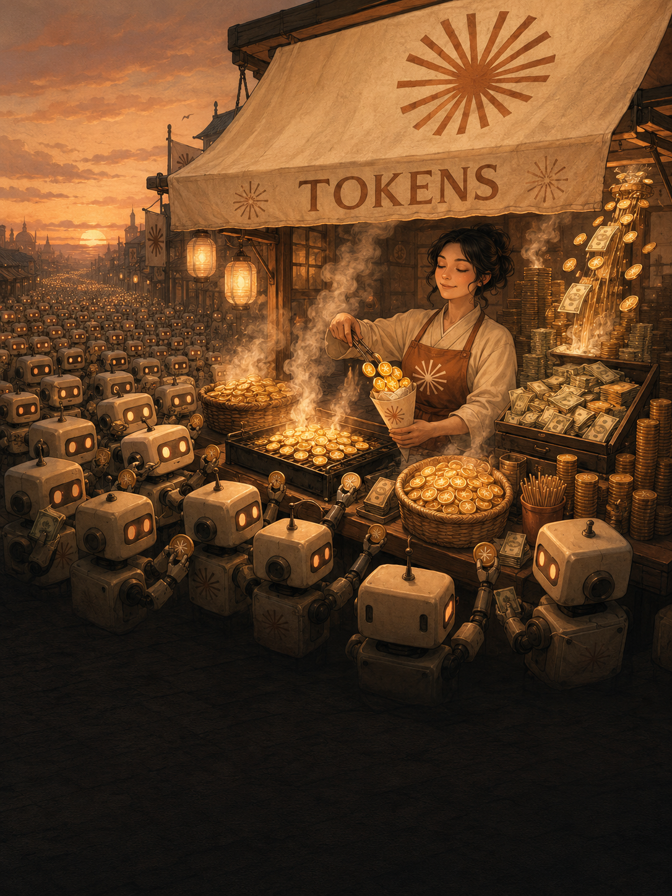
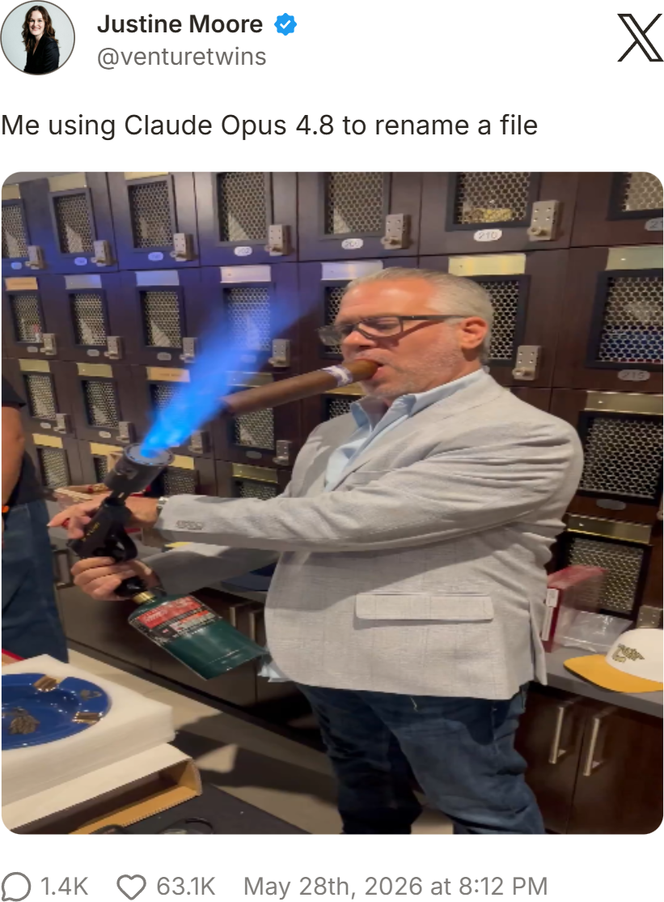
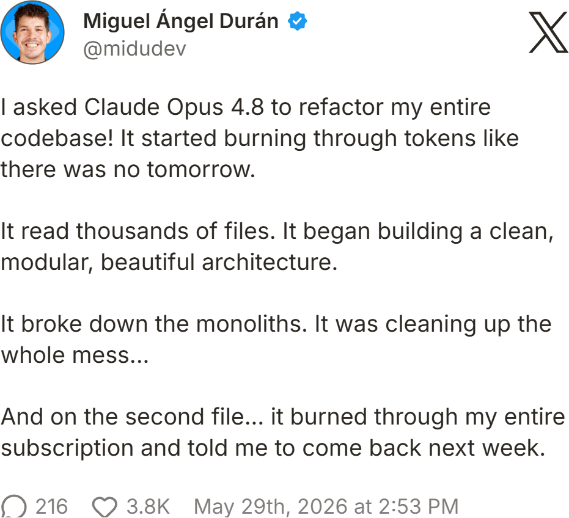
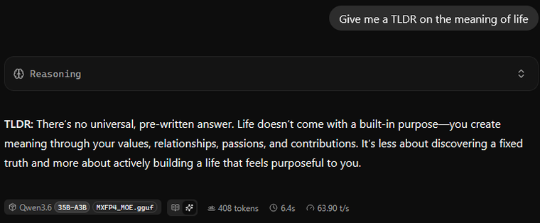

Claude
Opus 4.8
Inside: what the update changes and how it was received at launch, dynamic workflows and rapid prototyping, where Opus 4.8 lands on the DeepSWE benchmark, and running open models locally over a private tunnel.
What we learned so far
Opus 4.8 builds naturally on Opus 4.7, and it leans into what Claude is increasingly good at: long autonomous runs, and now dynamic workflows.
Improved coding honesty
Claude is 4x less likely to let a flaw in its own code pass unflagged, and now ranks #1 across the major independent benchmarks.
Dynamic Workflows
Claude writes a JS script, fans out up to 1,000 subagents (16 at once), has other agents refute the findings, then verifies before results reach you.
Effort control
Sets how hard Claude thinks per task. High is the new default; xhigh is recommended for coding. Carefully try the ultracode setting.
Cheaper fast mode + efficiency
Fast mode runs at 2.5x speed for $10/$50 per M, 3x cheaper than prior fast mode; ~35% fewer output tokens vs 4.7.
There's no reason to look back at 4.7. Opus 4.8 is a modest improvement, not a fundamental change. GPT-5.5 still has the edge on cost for now, though its 2×-token promotion ends 1 June, so that gap is about to narrow on its own.
GPT-5.5 set a high bar, and 4.8 meets it comfortably. The exciting question now is what GPT 5.6 will bring and when Mythos releases.
Praise and pushback
Mixed-to-positive, and it depends what you do. For everyday users the gain is incremental and hard to perceive; for long-context and agentic work, several reviewers call it a step change.
Excels at prototypes and standing up new projects fast.
Lands whole features in a single pass, little hand-holding.
Reliably finds the right detail buried deep in very large inputs.
Warmer and collaborative; flags doubt instead of bluffing.
Still stumbles on edge cases in large, legacy codebases.
Drags on long-context and high-effort runs.
Haven't vanished; not yet one to leave unsupervised.
Burns the usage cap fast, especially under ultracode.
One-shot approach. Prompt Claude to solve the problem, not just follow instructions. Give enough context and constraints to steer it the right way, and prototype in HTML before finalizing the feature.
Long-horizon runs. Lean on auto-mode and goals to let Claude work for hours with minimal guidance. Kick off with the deep-research feature to gather context for your opening prompt.
What went viral


Second place on the strictest test
Most leaderboards put Opus 4.8 at or near the top. DeepSWE — a contamination-hardened coding benchmark from Datacurve, built to show where frontier models actually diverge — tells a sharper story: here Claude runs second, behind GPT-5.5.
113 from-scratch tasks across 91 live open-source repos in 5 languages, one fixed harness for every model. Source: Datacurve.
Nothing to memorize
Tasks are written from scratch, never merged upstream, and shipped as a shallow clone with no solution hash to find.
Behavioral grading
Hand-written verifiers check what the code does, not how. 0.3% false positives vs 8.5% on SWE-Bench Pro.
Real scope
Reference fixes average 668 lines across 7 files — long-horizon work, not one-line patches.
The Claude footnote
On the older SWE-Bench Pro, roughly 18% of Opus 4.7's passes came from reading the answer out of git history. DeepSWE removes that shortcut, and the ranking reshuffled.GPT-5.6 · outlook
No DeepSWE score exists yet, and leaked "canary" builds stay unconfirmed. On trajectory — 5.4's 56 to 5.5's 70 — a 5.6 would likely extend OpenAI's lead, not hand it back. Outlook, not data.Prototype before you commit
The cheapest change is the one you make before the code exists. Let people try the idea instead of reading a description, and the wrong assumptions surface while they are still cheap to fix.
Cheap to change
Ripping up a rough sketch costs minutes; ripping up shipped code costs weeks.
Flaws surface early
People react to what they can try, so broken assumptions show before you build on them.
Rough invites honesty
Unfinished-looking work gets honest critique, not admiration for the polish.
Outline the content, copy and structure first, with no layout to argue about yet.
StructureHand-drawn flows and wireframes; the rough look keeps the focus on the idea.
SketchPrecise diagrams for architecture, data models and how the pieces connect.
DiagramWireframes up to clickable, high-fidelity mockups; the standard for dev handoff.
MockupTemplate-driven layouts and decks for when it needs to look presentable, fast.
LayoutA single interactive file Opus 4.8 one-shots, openable in any browser.
LiveClaude's new feature explained

Not every model lives in the cloud
A colleague at DataIM hosts open models on serious GPUs at home, and a WireGuard tunnel lets us reach his machine as if it sat on our own desks.

Small & quick
About 4,000 lines of code, in the Linux kernel over UDP. It connects in milliseconds at near-wire speed, so the model feels local.
Modern, quiet crypto
One set of strong primitives (Curve25519, ChaCha20-Poly1305). Each peer is a public key tied to its allowed IPs; an unknown key gets no reply.
One shared LAN
Every teammate's device joins one private network, so the endpoint and the apps we build on it sit a hop away.
How this was built
This field guide was assembled with Claude Code. There was no single master prompt — it came together in stages, each leaving its own record in the project folder.
- Research loop. A cron fired every 30 minutes for 24 hours — 62 passes — each rotating across docs, benchmarks, Hacker News, Reddit and X to append chart-ready atoms.
- Synthesis. Those atoms were distilled into a six-part brief and a page map: bottom line, what changed, reception, how to use it.
- Flip-book. One self-contained HTML file, hand-built in the Anthropic house style — cream paper, terracotta accent, serif display, 3D page turns.
- Verified per page. Later pages drew their own /deep-research; every page was rendered in a headless browser and checked to fit with no overflow.
- Imagery. The cover painting and the page-6 workflow icons were generated with GPT Image 2.0, then placed into the layout by hand.
Primary · Anthropic launch post, system card & docs · Datacurve DeepSWE · WireGuard whitepaper & docs
Independent analysis · Artificial Analysis (Intelligence Index, GDPval) · BenchLM · Simon Willison · Every.to · Claire Vo / Lenny's · Lance Martin / LangChain
Press & partners · TechCrunch · VentureBeat · The New Stack · 36Kr · Devin · Cursor · Databricks · Bun
Community · r/ClaudeAI · Hacker News · X
· end ·
The GPT
Gazette
A field guide to Claude Opus 4.8, compiled at launch, 02 June 2026.